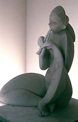
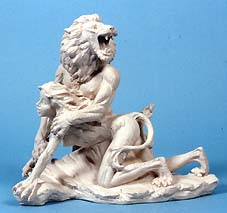

| Porcelana Zelli
Patrocinado por el diseño contemporáneo británico
en su segundo año
(Publicación de prensa). Translation by Marcela Boltar.
Porcelana
Zelli, es un especialista independiente destacado en porcelana
figurativa el cual anuncia el segundo año del Premio Porcelana
Zelli. Siguiendo el suceso de la inauguración del pasado
año, Zelli eligió el tema: “la metamorfosis
de Ovidio” para este concurso. Este es un proyecto privado,
con el propósito de promover el uso de porcelana como medio
artístico y aumentar el previo conocimiento de jóvenes
artistas británicos talentosos que trabajan la porcelana.
La galería celebro su 50 aniversario el pasado año
y ha estado por largo tiempo asociada con nuevos artistas, además
de ofrecer una amplia colección de porcelana figurativa en
Londres como en renombradas casas europeas, incluida Meissen, Nymphemburg
y Hutschenreuther entre otras.
El
surtido de trabajos disponibles incluye los más tradicionales
figurines como la orquesta de monos de Meissen, el temperamento
Deco es tomado como un aerodinámico set de escritorio desde
Hochst y las vibrantes huestes de loros de Dresden que a través
del trabajo de competidores que siguen la propuesta desde el año
anterior incluyendo a: Eleanor Bartleman’s y LeslieMartin.
El tesoro trova al fin de la calle Dover ofreciendo la perfecta
ilustración que la porcelana es un lujo abordable a cualquier
gusto y bolsillo.
Penélope Higham, el propietario de Porcelana Zelli, comenta
sobre el premio: “Zelli esta orgulloso de descubrir el talento
de los artistas británicos que trabajan con porcelana y mostrar
al publico la versatilidad de este medio como una forma de arte.
La porcelana ha sido por largo tiempo la cenicienta del mundo artístico.”
más artículos en español
más artículos en inglés
|